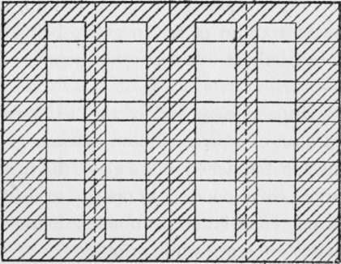

Printing By Actinometer
Description
This section is from the book "The Barnet Book Of Photography", by Herts Barnet. Also available from Amazon: The Barnet Book Of Photography.
Printing By Actinometer
The method suggested in the early part of this article for gauging the exposure for preliminary prints would be quite impracticable for general work. The use of an actinometer is very simple in practice, and allows prints to be exposed correctly with the minimum of trouble. In fact, when a number of frames are in use together it will be found less troublesome to refer to the actinometer from time to time and take in each frame as the exposure necessary for that particular negative is given, than to adopt the more usual method of frequently examining each print.
Actinometers of different types are articles of commerce, but making one is such an exceedingly simple matter that probably most workers will adopt this plan.
The most simple method is to take a quarter-plate printing frame and a piece of plain glass to fit it. Some thin white tissue or similar paper as free from grain as possible will be required, and six or seven pieces should be cut the size of the glass. Other pieces should be cut the full length of the glass, but one being half an inch narrower, others a quarter of an inch less than the preceding in each case until the width of the glass is covered in the manner shown in the diagram, all the widths being a quarter of an inch excepting the outside strips, which are half an inch. All these should be attached to the glass and to each other by starch, paste, or other colourless adhesive, and outside the glass ten thicknesses of the same paper should be attached at each end, extending from the end to the dotted line only, a second piece of glass being used outside these as a protection. Strips of thin opaque paper across the tissue paper where shown shaded complete the apparatus. The glasses and paper may be held together by strips of paper or lantern-slide binding.
In use, a piece of P.O.P. is placed in the frame, and on exposure to light the various thicknesses of tissue paper, acting as a negative consisting of squares absolutely regular in their increase of density, print squares on the P.O.P., the strips of opaque paper preserving the purity of the whites, and allowing the images of the squares to be more readily seen. First an image of the thinnest square will be faintly visible, and longer exposure will cause similar images of the other squares to appear in turn, the register for the correct exposure of any negative being the highest square that is faintly visible when that negative is correctly exposed.
The extra strips at each end of the actinometer are to obtain an extra set of squares following those given by the strips of paper first attached to the glass, the first square of the line marked corresponding in opacity to the last of the lines A. A reference letter or number marked on each square facilitates reference while printing.
It is absolutely essential in using an actinometer of this character that the same make and kind of P.O.P. should always be used for it and for making test prints from the negatives, as different makers' silver papers are not equal in rapidity.
In order to obtain the correct number on the actinometer scale for a carbon print from any negative, a rough print of that negative or from a part of it should be taken on silver paper, and the actinometer put out to print at the same time as this negative, and when the silver print has the appearance in its lighter tones that it should have when finished, as described previously for preliminary trials, reference should be made to the actinometer and the highest square visible registered as the printing number for that negative.
Several test prints may be exposed together, the actinometer being examined as each is finished.
When printing in carbon, the tissue is put in the frames, the reference number for each negative noted, and the actinometer put out with them, and by examining it from time to time each print may be brought in as the actinometer square corresponding to it becomes visible.
The exposure number obtained from the test print will be the correct one for brown tissue; black prints should be printed one number less, and red or warm brown one more.
Although this method will give approximately correct results, the difference in character between silver and carbon will sometimes make a different number desirable to obtain the best effect, but in almost all cases the exposure so obtained will enable a fair print to be obtained at the first trial, and it should be so near the best exposure that the difference can be gauged from the first print, and the number noted for all future work This number being marked on the negative or in a notebook, will ensure all later prints from that negative being correctly exposed.
Should any negative require shielding during part of the exposure, to hold back the printing of any portion, the number on the actinometer at which the shield should be placed in position can be noted in the same manner.
Any number of frames may be put out to print by the aid of the one actinometer, provided that all are put out together. It will be seen by referring to the diagram of the actinometer that it is in duplicate. The object of this is that apiece of P.O.P. the full size of the glass may be used, and a thin opaque paper inserted in one half in front of the P.O.P. to prevent it from printing. If the actinometer is being used for several prints and some are printing very slowly, a second set of prints may be commenced, the thin opaque paper withdrawn at the time these are put out, and the actinometer read from the second half.
Continue to:
- prev: Storage Of Tissue And Prints
- Table of Contents
- next: Drawing And Etching Papers For Single Transfer
Tags
paper, print, negative, exposure, lens, development, camera, focus